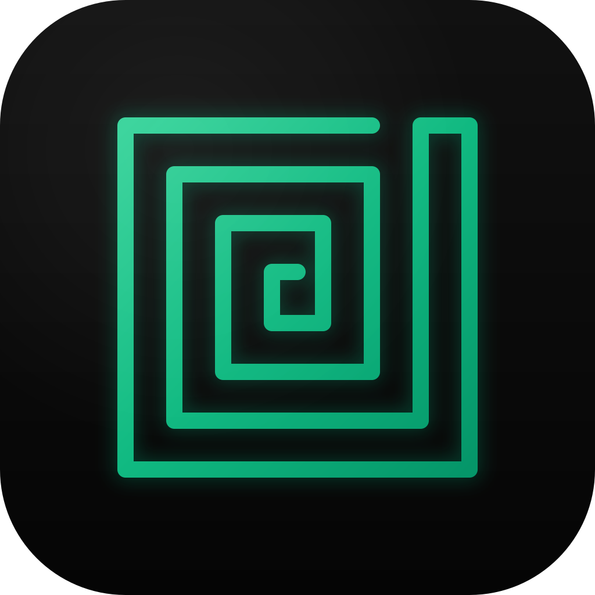
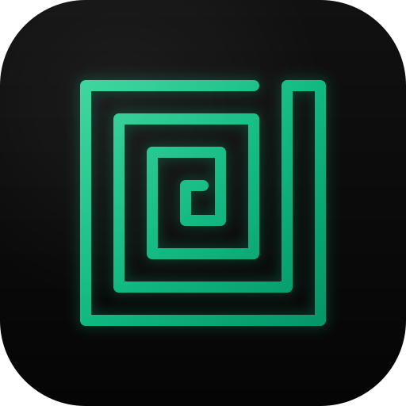
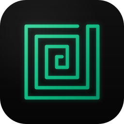

Emerald Dark — All Sizes (Optical Tiers)

1024px (512@2x) Large tier — 4 layers
512px Large tier
256px Large tier
128px
Medium tier — 3 layers
64px (32@2x)
Medium tier
32px (16@2x)
Small tier
16px
Small tier